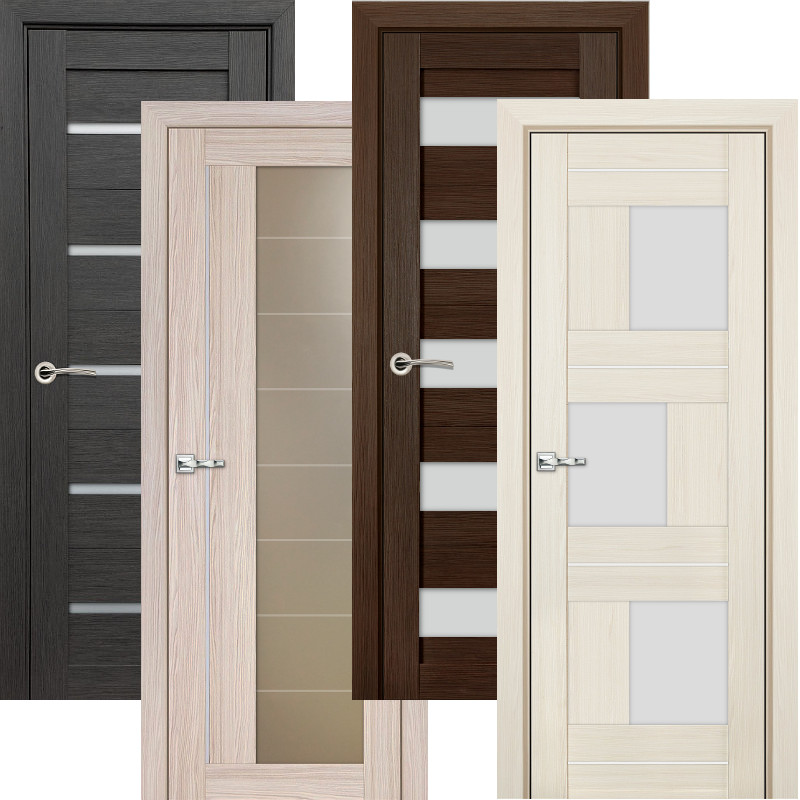

Входные двери
Не просто преграда между вашим домом
и внешним миром, это еще и «лицо»
вашего жилища, которое задает тон
всему интерьеру прямо с порога.
Поэтому хочется, чтобы оно выглядело
достойно и привлекательно. Сегодня
стилевых решений, в которых может быть
изготовлена дверь, очень много, начиная от
старой доброй классики и заканчивая
всевозможными современными
направлениями.
и внешним миром, это еще и «лицо»
вашего жилища, которое задает тон
всему интерьеру прямо с порога.
Поэтому хочется, чтобы оно выглядело
достойно и привлекательно. Сегодня
стилевых решений, в которых может быть
изготовлена дверь, очень много, начиная от
старой доброй классики и заканчивая
всевозможными современными
направлениями.

Межкомнатные двери
Вид и красота двери зависят от внешнего
покрытия. Двери покрывают самыми
разными материалами – шпоном, деревом,
различными пленками. Но пальму
первенства удерживают ламинированные
межкомнатные двери.
покрытия. Двери покрывают самыми
разными материалами – шпоном, деревом,
различными пленками. Но пальму
первенства удерживают ламинированные
межкомнатные двери.
Балконные двери
При любом варианте использования
балкона, правильно оформленная
балконная дверь играет очень важную роль.
Помимо своей основной задачи, правильно
подобранная конструкция и качественная
установка балконной двери защитит
остальное помещение от холодного воздуха,
влаги и шума, проникающих с улицы,
а также обеспечит оптимальный режим
проветривания.
балкона, правильно оформленная
балконная дверь играет очень важную роль.
Помимо своей основной задачи, правильно
подобранная конструкция и качественная
установка балконной двери защитит
остальное помещение от холодного воздуха,
влаги и шума, проникающих с улицы,
а также обеспечит оптимальный режим
проветривания.